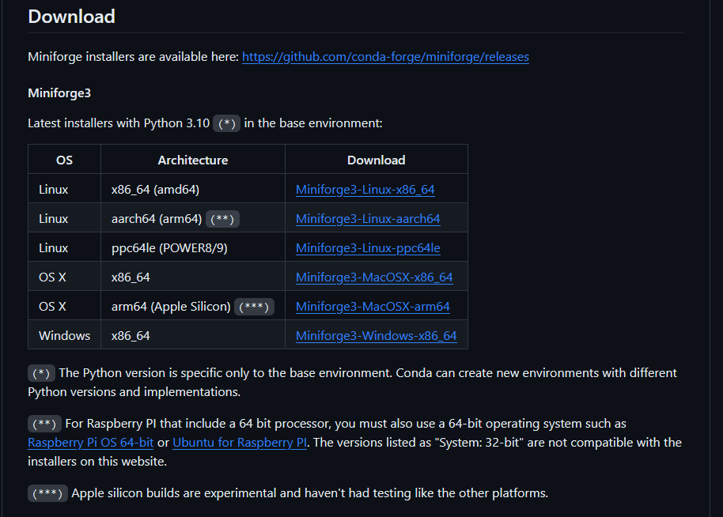

Mamba implementation in Scientific Pipelines.
What is Mamba?
Mamba is intended to be a drop-in replacement for /reimplementation of conda (written in C++).
Mamba has been something that I have implemented into all of my pipelines, since it trivializes the package management process. I do almost all of my work within the context of containers/virtual environments, and mamba makes my work life so much easier.
Previously, I used to use Conda as my package manager of choice, relying on it to cut down the amount of time I would need to build an environment using pip as an installer. Once I discovered Mamba, however, I never went back to Conda.
Why use Mamba over Conda?
Simple. Mamba is just faster.
Conda is implemented in Python, while Mamba utilizes C++ code for critical operations (instead of Python), optimizing it’s performance.
At the same time, Mamba utilizes the same command line parser, package installation and deinstallation code and transaction verification routines as Conda to stay as compatible as possible.
This means that Mamba is a drop-in replacement for Conda. If you know how to use Conda, you know how to use Mamba!
Mamba’s features include:
multi-threaded parallel downloads of repo data and package files.
libsolvfor much faster dependency solving, which is also used in the RPM package manager of Red Hat, Fedora and OpenSUSE.core parts of mamba are implemented in C++.
utilizes the same command line parser, package installation and deinstallation code and transaction verification routines as Conda to stay as compatible as possible.

Conda excels in creating virtual environments that help keep your base environment clutter-free. Initiating a Conda virtual environment helps you keep the dependencies for a particular project limited to that environment. No need to run the risk of nuking your workflow simply because you had to install Python 2.7 as a dependency for an old package that the maintainer never got around to updating.
Remember that mamba environments are essentially conda environments with mamba enabled. Functionally speaking, there is no difference between a mamba env and a conda env.
Implementing Mamba into your workflow
Implementing Mamba into your workflow is pretty straightforward. The potential options are:
Mambaforge: The mambaforge installer for conda (similar to conda-forge). This allows usage of the conda-forge channel by default.
Micromamba: micromamba is a tiny executable version of the mamba package manager. It is a statically linked C++ executable with a separate command line interface. It does not need a base environment and does not come with a default version of Python.
Miniforge: Similar to miniconda. As of August 2023, virtually similar to mambaforge, and is recommended over mambaforge since it now comes with mamba installed. Miniforge used to only ship with conda.
As of July 2023, Miniforge then started to ship with conda-libmamba-solver. Since conda-libmamba-solver depends on libmambapy, the only difference between Miniforge and Mambaforge was the presence of the mamba Python package. As of August 2023, miniforge added mamba as well to minimize surprises.
- Existing conda Install Simply installing mamba into a pre-existing conda environment. This is not recommended by the official documentation.
Non-containerized mamba
If you’re intending on installing mamba, the official documentation says to ensure that mamba and conda are the only packages to be installed in the base environment.
Note that as of August 2023, miniforge and mambaforge are essentially the same thing.
From the official miniforge documentation,
After the release of Miniforge 23.3.1 in August 2023, Miniforge and Mambaforge are essentially identical. The only difference is the name of the installer and subsequently the default installation path.
Before that release, Miniforge only shipped conda, while Mambaforge added mamba on top. Since Miniconda started shipping conda-libmamba-solver in July 2023, Miniforge followed suit and started shipping it too in August. At that point, since conda-libmamba-solver depends on libmambapy, the only difference between Miniforge and Mambaforge was the presence of the mamba Python package. To minimize surprises, we decided to add mamba to Miniforge too.
Given that the official documentation encourages the use of Miniforge over Mambaforge, the rest of this blog post will be looking at installing and using Miniforge.
Miniforge
The official miniforge documentation has a list of installers for different operating systems and architectures.

The easiest way to do this is via a non-interactive method, using the following commands (for Unix-like platforms such as Mac OS & Linux)
This section assumes you already have conda installed and set up in the base environment.
## Download the appropriate installer for your architecture and OS
wget "https://github.com/conda-forge/miniforge/releases/latest/download/Miniforge3-$(uname)-$(uname -m).sh"
## Run the script in non-interactive mode.
## -p is prefix option. A directory will be created at "${HOME}/conda".
bash Miniforge3-$(uname)-$(uname -m).sh -b -p "${HOME}/conda"
## Create the path to conda
source "${HOME}/conda/etc/profile.d/conda.sh"
## For mamba support also run the following command
source "${HOME}/conda/etc/profile.d/mamba.sh"
## Activate the base environment
conda activateThis above script installs mamba into the base conda environment and then activates the conda environment, enabling the usage of mamba. Now, using mamba is as simple as replacing all instances of conda with mamba!
Remember that the only packages you want installed in the base conda environment are mamba and conda, nothing else.
Micromamba
The documentation for installation of micromamba can be found here.
micromamba is a tiny executable version of the mamba package manager. It is a statically linked C++ executable with a separate command line interface. It comes with an empty base environment, and does not come with a default version of Python or conda.
As a prerequisite, basic utilities (such as curl,tar and bzip2) need to be installed. Also you need a glibc based system like Ubuntu, Fedora or Centos (Alpine Linux does not work natively).
The following magic URL always returns the latest available version of micromamba, and the bin/micromamba part is automatically extracted using tar.
# Linux Intel (x86_64):
curl -Ls https://micro.mamba.pm/api/micromamba/linux-64/latest | tar -xvj bin/micromamba
# Linux ARM64:
curl -Ls https://micro.mamba.pm/api/micromamba/linux-aarch64/latest | tar -xvj bin/micromamba
# Linux Power:
curl -Ls https://micro.mamba.pm/api/micromamba/linux-ppc64le/latest | tar -xvj bin/micromamba
# macOS Intel (x86_64):
curl -Ls https://micro.mamba.pm/api/micromamba/osx-64/latest | tar -xvj bin/micromamba
# macOS Silicon/M1 (ARM64):
curl -Ls https://micro.mamba.pm/api/micromamba/osx-arm64/latest | tar -xvj bin/micromambaAfter extraction is complete, the micromamba binary can be used.
# Linux/bash:
./bin/micromamba shell init -s bash -p ~/micromamba # this writes to your .bashrc file
# sourcing the bashrc file incorporates the changes into the running session.
# better yet, restart your terminal!
source ~/.bashrcThe above code chunk incorporates the path to the micromamba binary into the restarted terminal.
You can now activate the base environment, and build other environments.
micromamba activate # this activates the base environment
micromamba install python=3.6 jupyter -c conda-forge
# or
micromamba create -n env_name xtensor -c conda-forge
micromamba activate env_nameContainerized mamba (specifically Docker)
This is my recommended method of using mamba or micromamba. If you’re using mamba, you’re already encouraged to use conda environments. If you’re using a conda environment, you should 100% consider incorporating the usage of containerization into your scientific workflow.
Containers make scientific pipelines easy to reproduce and easy to share, two concepts which form the bedrock of responsible science.
I have a blog post about containers and why they rule. You can find it here.
Docker-based Miniforge
This is very simple. Simply pull from the condaforge/miniforge3:latest tag.
Start your dockerfile with the line:
FROM condaforge/miniforge3:latestThis uses miniforge as a base image, and now you have a base environment with mamba and conda already installed and configured.
Docker-based Micromamba
This is similar to the above section. Start your dockerfile with the line:
FROM mambaorg/micromamba:latestA real-world example of why I prefer mamba over conda.
Consider the following two dockerfiles:
conda based dockerfile
FROM condaforge/miniconda3:latest
USER root
RUN conda create -n test_env python=3.11 -y
RUN conda install -n test_env \
'r-tidyverse' \
'r-sessioninfo' \
'r-bedr' \
'r-dbplyr' \
'r-rmariadb' \
'r-seqinr' \
'r-stringr' \
'r-e1071' \
'r-matrixeqtl' \
'ucsc-blat' \
'r-immunedeconv' \
'bioconductor-ensembldb' \
'bioconductor-bsgenome.hsapiens.ncbi.grch38' \
'bioconductor-illuminahumanv4.db' \
'plink' \
'bioconductor-qvalue'\
'r-mashr' \
'git'\
'r-vcfr' \
'r-ashr' \
'r-rstatix' \
'r-ggpubr' \
'r-glmnet' \
'r-janitor' \
'r-reticulate' \
-c "bioconda/label/cf201901" -c bioconda -c dnachun \
-c anaconda -c conda-forge -y \
&& \
conda clean --all -f -y
RUN echo "source activate test_env" > ~/.bashrc
ENV PATH /opt/conda/envs/test_env/bin:$PATHmamba based dockerfile
FROM condaforge/miniforge3:latest
USER root
RUN mamba create -n test_env python=3.11 -y
RUN mamba install -n test_env \
'r-tidyverse' \
'r-sessioninfo' \
'r-bedr' \
'r-dbplyr' \
'r-rmariadb' \
'r-seqinr' \
'r-stringr' \
'r-e1071' \
'r-matrixeqtl' \
'ucsc-blat' \
'r-immunedeconv' \
'bioconductor-ensembldb' \
'bioconductor-bsgenome.hsapiens.ncbi.grch38' \
'bioconductor-illuminahumanv4.db' \
'plink' \
'bioconductor-qvalue'\
'r-mashr' \
'git'\
'r-vcfr' \
'r-ashr' \
'r-rstatix' \
'r-ggpubr' \
'r-glmnet' \
'r-janitor' \
'r-reticulate' \
-c "bioconda/label/cf201901" -c bioconda -c dnachun \
-c anaconda -c conda-forge -y \
&& \
mamba clean --all -f -y
RUN echo "source activate test_env" > ~/.bashrc
ENV PATH /opt/conda/envs/test_env/bin:$PATHBoth dockerfiles are intended to accomplish the same goal. Create a conda env called test_env, install a list of packages in test_env, and then activate the test_env. However, while they accomplish the same goal, the way they both go about it is very different. I’ve told you that the mamba based package installation is superior to using conda since it’s faster, but now let’s look at the output of a docker build command for both of these dockerfiles.
mamba based docker build time
[+] Building 1250.0s (8/8) FINISHED
=> [internal] load build definition from dockerfile 0.4s
=> => transferring dockerfile: 897B 0.0s
=> [internal] load .dockerignore 0.3s
=> => transferring context: 2B 0.0s
=> [internal] load metadata for docker.io/condaforge/miniforge3:latest 0.0s
=> CACHED [1/4] FROM docker.io/condaforge/miniforge3:latest 0.0s
=> [2/4] RUN mamba create -n test_env python=3.11 -y 71.8s
=> [3/4] RUN mamba install -n test_env 'r-tidyverse' 'r-sessioninfo' 'r-bedr' 'r-dbplyr' 'r-rmariadb' 'r-seqinr' 'r-stringr' 'r-e1071' 'r-matrixeqtl' 'ucsc-bl 1122.7s
=> [4/4] RUN echo "source activate test_env" > ~/.bashrc 1.5s
=> exporting to image 53.4s
=> => exporting layers 53.3s
=> => writing image sha256:94fbf957162e3735bcba17769deca5a2203f0ec6c7625d8f67254a085ac41531 0.0s
=> => naming to docker.io/library/mamba_test 0.0smamba (miniforge3, more specifically) took a total of 1250 seconds to accomplish this. (Approximately 21 minutes.)
conda based build time
[+] Building 4180.1s (9/9) FINISHED
=> [internal] load build definition from dockerfile 0.4s
=> => transferring dockerfile: 875B 0.0s
=> [internal] load .dockerignore 0.3s
=> => transferring context: 2B 0.0s
=> [internal] load metadata for docker.io/continuumio/miniconda3:latest 0.7s
=> [auth] continuumio/miniconda3:pull token for registry-1.docker.io 0.0s
=> CACHED [1/4] FROM docker.io/continuumio/miniconda3:latest@sha256:5ee0ed861bce8f67acb0a3e8a416891781db54302d93bf20a3c 0.0s
=> [2/4] RUN conda create -n test_env python=3.11 -y 30.9s
=> [3/4] RUN echo "source activate test_env" > ~/.bashrc 1.4s
=> [4/4] RUN conda install 'r-tidyverse' 'r-sessioninfo' 'r-bedr' 'r-dbplyr' 'r-rmariadb' 'r- 4073.2s
=> exporting to image 73.4s
=> => exporting layers 73.2s
=> => writing image sha256:30e994e7715109c9860dc45b40e2e57cac194c035a0239ad4b1a8246c59bf8f6 0.1s
=> => naming to docker.io/library/conda_test 0.1sconda (miniconda3, more specifically) took a total of 4180 seconds to accomplish this. (Approximately 70 minutes.)
conda took about 3.3 times the amount of time mamba did to build the same environment!
libsolv makes mamba shine and helps it outperform regular conda for package management.
This is why I prefer using mamba over conda for environment based package management. Especially when I’m adding stuff and rebuilding containers over and over, this extra saved time makes a big difference when it adds up.
Try mamba yourself! Remember, if you can use conda, you already know how to use mamba!